Advanced QGIS (Full Course Material)
Learn Techniques for Automating GIS Workflows and Advanced Visualizations.
Ujaval Gandhi

Introduction
This class focuses on techniques for the automation of GIS workflows. You will learn techniques that will help you be more productive, create beautiful visualizations and solve complex spatial analysis problems. This class is ideal for participants who already use QGIS and want to take their skills to the next level.
Below are the topics covered in this class
- Processing Framework - Algorithms, Batch processing, and Modeler
- Animating time-series data
- Creating 3D fly-through from aerial imagery
- Advanced Expressions for enabling faster data editing, fuzzy matching, and more.
Before we do the exercises, it will help you to learn a bit more about open-source and how the QGIS project operates.

Software
This course requires QGIS LTR version 3.34.
Please review QGIS-LTR Installation Guide for step-by-step instructions.
Get the Data Package
The examples in this class use a variety of datasets. All the
required layers, project files etc. are supplied to you in the
advanced_qgis.zip file along with your class materials.
Unzip this file to the Downloads directory.
Download advanced_qgis.zip.
Concept: Processing Framework
QGIS 2.0 introduced a new concept called Processing Framework. Previously known as Sextante, the Processing Framework provides an environment within QGIS to run native and third-party algorithms for processing data. It is now the recommended way to run any type of data processing and analysis within QGIS - including tasks such as selecting features, altering attributes, saving layers etc. - that can be accomplished by other means. But leveraging the processing framework allows you to be more productive, fast, and less error-prone.
The Processing Framework consists of the following distinct elements that work together.
- Processing Toolbox: Contains individual tools
(i.e. algorithms) grouped by providers and functionality. There are
hundreds of algorithms available out of the box. They are organized by
Providers. The tools created by QGIS developers are available
as a Native QGIS provider. Processing Framework
providers an easy way to integrate tools written by other software and
libraries such as GDAL, GRASS, and SAGA. QGIS Plugins can also add new
functionality via processing algorithms in the toolbox.
- Batch Processing Interface: Allows any processing tool to be executed on multiple layers together.
- Model Designer: This allows the user to define the workflow and chain multiple processing steps together using a drag-and-drop mechanism.
- History Manager: Records and stores all executions of algorithms to allow users to reproduce the past analysis.
- Results Viewer: An interface to view non-spatial outputs from algorithms - such as tables and charts.
We will learn about each of these through hands-on exercises in the following sections.
1. Using Processing Toolbox
This exercise aims is to show how a multi-step spatial analysis problem can be solved using a purely processing-based workflow. This exercise also shows the richness of available algorithms in QGIS that can do sophisticated operations that previously needed plugins or were more complex.
We will work with roads extracted from OpenStreetMap for the state of Karnataka in India. The admin boundary for the state and the districts come from DataMeet.
1.1 Extract, Transform and Load
We will learn about some useful processing algorithms for basic data processing operations such as Extract, Transform and Load (ETL). Our goal for this section is to read a road layer and a boundary layer from a GeoPackage and calculate what is the total length of the national highways in a state. We will also see how to append the resulting layer to same GeoPackage.
- Browse to the data directory and expand
karnataka.gpkg. Drag and drop thekarnataka,karnataka_districtsandkarnataka_major_roadslayers to the canvas.
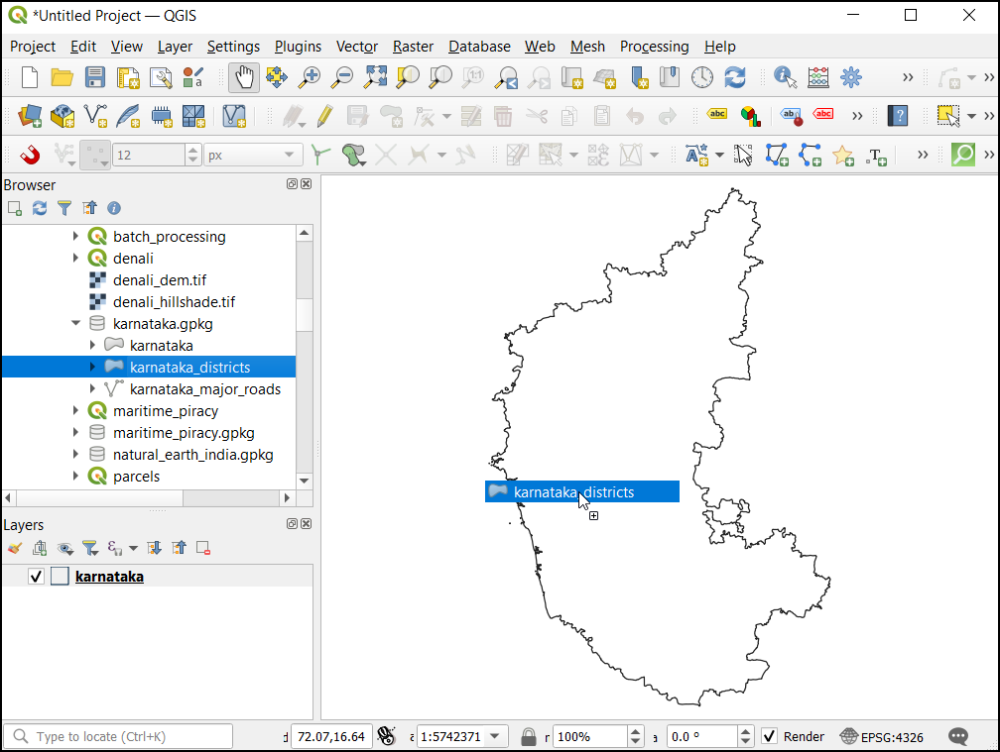
- The layer
karnataka_major_roadscontain all major roads, including national highways, state highways, major arterial roads etc. Select the layer and use the keyboard shortcut F6 to open the attribute table.
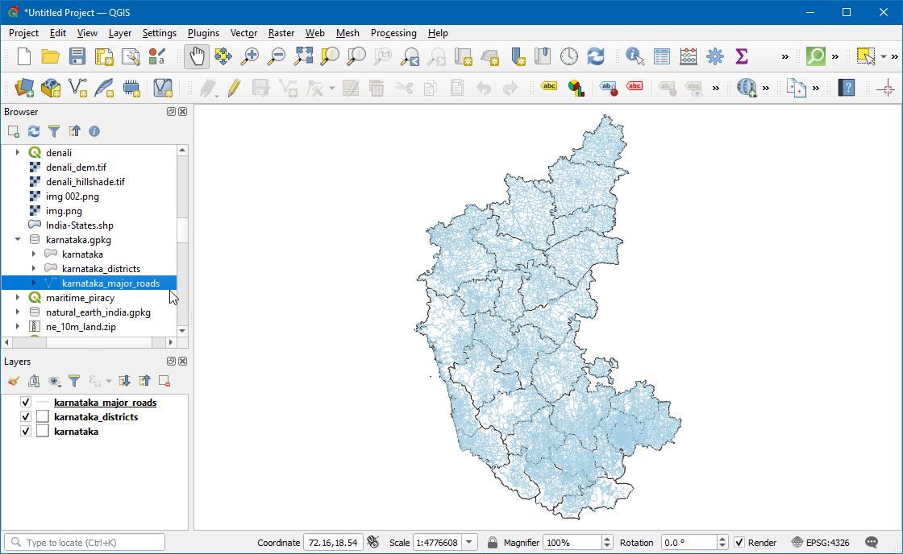
- You will notice that the
refcolumn has information about road designation. As we are interested in only national highways, we can use the information in this column to extract relevant road segments.
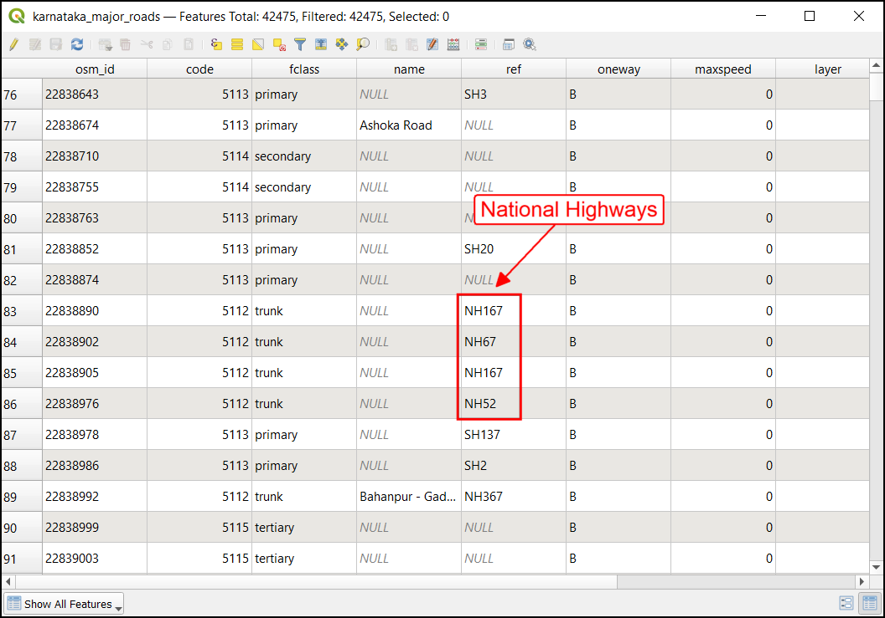
- You can use tools such as Select by expression, export the selected features as a new layer and continue to work. But the processing toolbox providers a much seamless workflow. Search for the algorithm Extract by expression.
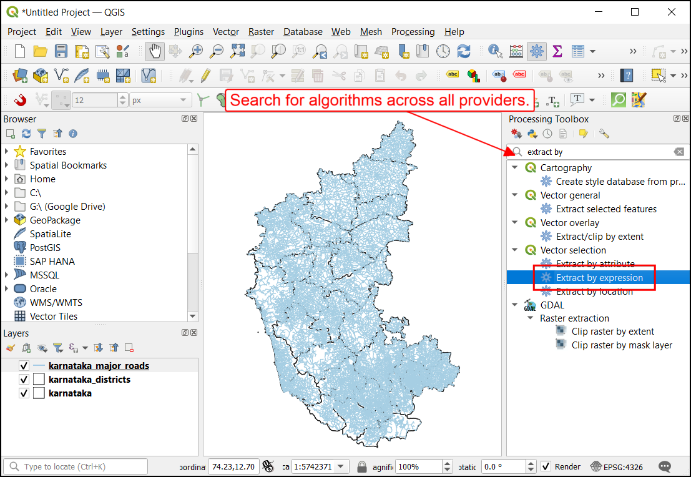
- Enter the following expression to extract the features where the
value of the
reffield starts with the lettersNH.
We are using Regular Expression (or RegEx) to match the field value to a specific pattern. Regular expressions are quite powerful and can be used for many complex data filtering operations. Here’s a good tutorial that explains the basics of regular expressions.
regexp_match("ref", '^NH')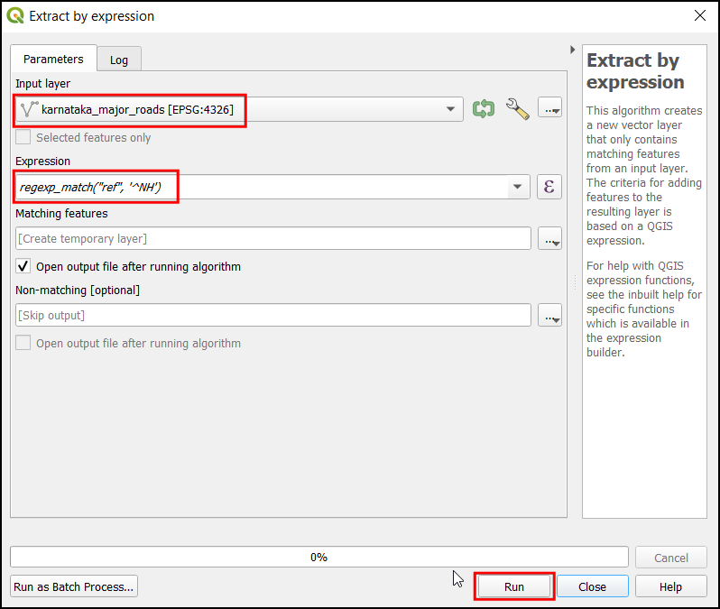
- You will get a new layer
Matching Featuresin the Layers Panel. Next, we want to calculate the length of each segment. You can use the built-in algorithm Add geometry attributes
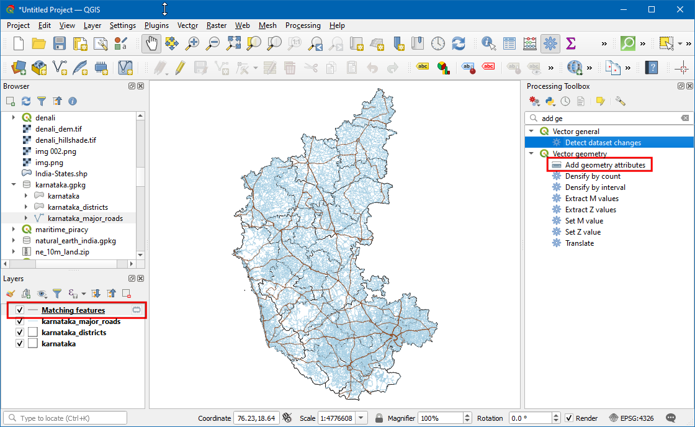
- The source layer is in the Geographic CRS EPSG:4326. But for the analysis, we want the lengths to be measured in meters/kilometers. The algorithm provides us with a handy option to calculate the distances in Elliposidal math - which is ideal for layers in the geographic CRS.
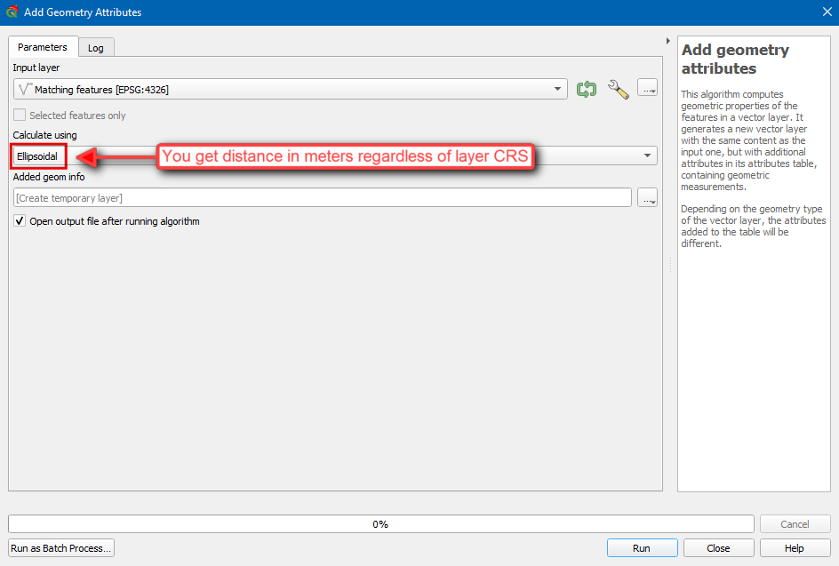
- A new layer with an additional field called
lengthwill be added to the Layers panel. The distances in this field are in meters. Let’s convert them to kilometers. You may reach out to the trusty QGIS field calculator to add a new field. That’s a perfectly valid way - but as mentioned earlier, there is a processing way to do things which is the preferred way. Search and open the Field Calculator processing algorithm instead and enter the following expression.
"length"/1000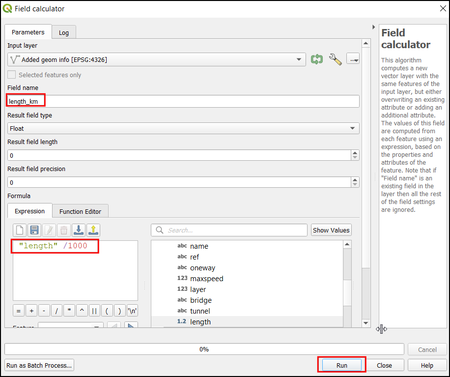
- A new layer with the field
length_kmwill be added to the Layers panel. Now we are ready to find out the answer. We just need to sum up the values in thelength_kmfield. Use the Basic Statistics for Fields algorithm.
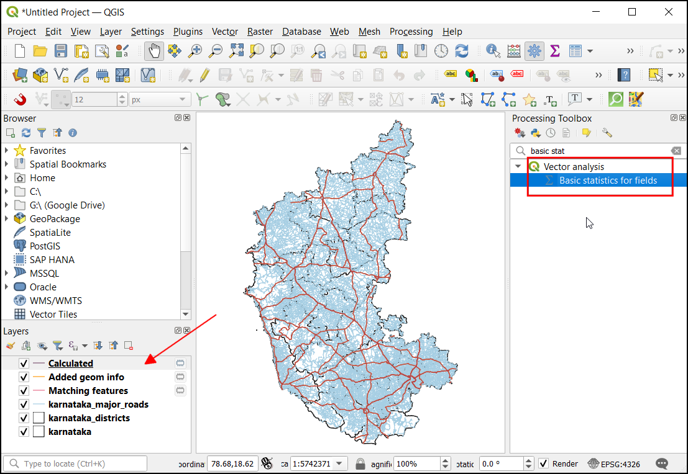
- In the Basic Statistics for Fields dialog, select
Calculatedas the Input layer andlength_kmas the Field to calculate statistics on. Click Run.
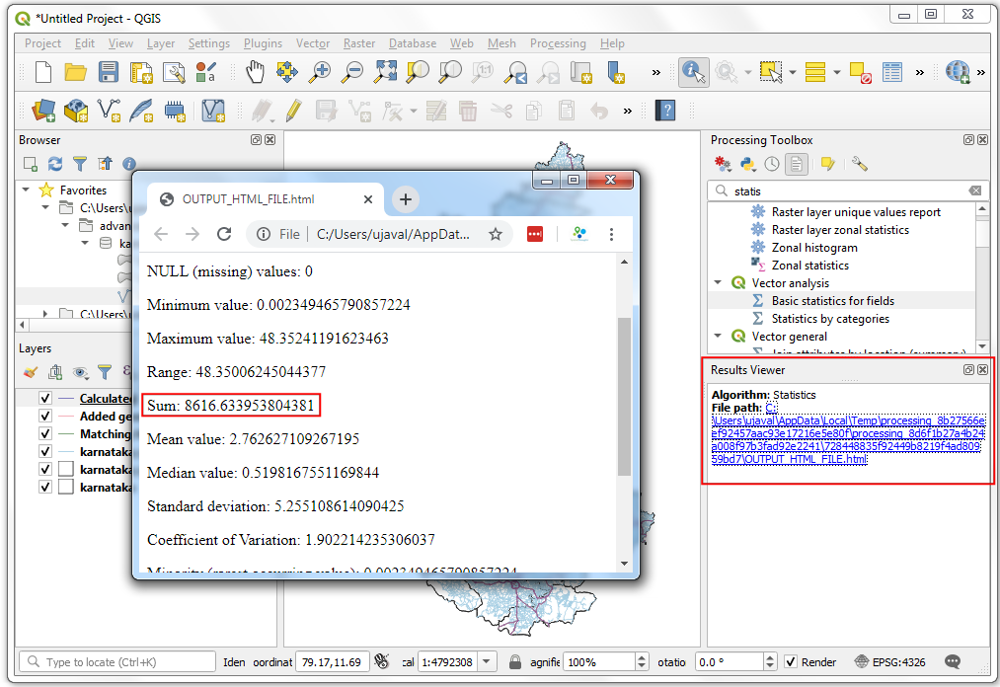
- The result is a table of different statistics on the column. As the result is not a layer, it will be displayed in the Results Viewer. The panel will contain the link to an HTML file containing the statistics. The Sum contains the total length of national highways in the state.
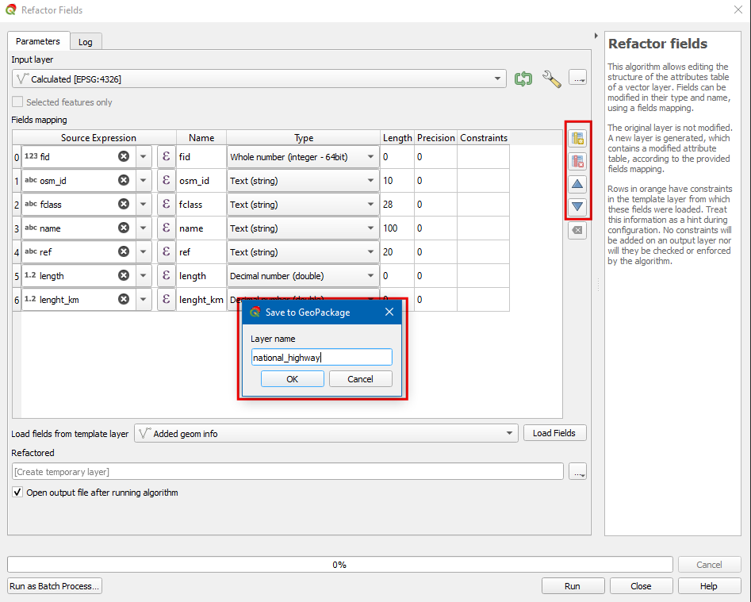
What do you think of the results? The resulting number may not be perfect because the OpenStreetMap database may have missing roads or are classified differently. But it is close to the number provided in the official statistics.
- The final layer is called
Calculatedand is a temporary memory layer. Let’s save it to the disk so we can use it later. The layer contains many fields which are not relevant to us, so let’s delete some columns before saving them. The classic way to do this is to toggle editing and use the Delete Column button from the Attribute Table. If you wanted to rename/reorder certain fields, that needed a plugin. But now, we have a really easy processing algorithm called Refactor Fields that can add, delete, rename, re-order and change the field types all at once. Delete fields that are not required and save the result as the layernational_highwaysin the sourcekarnataka.gpkg.
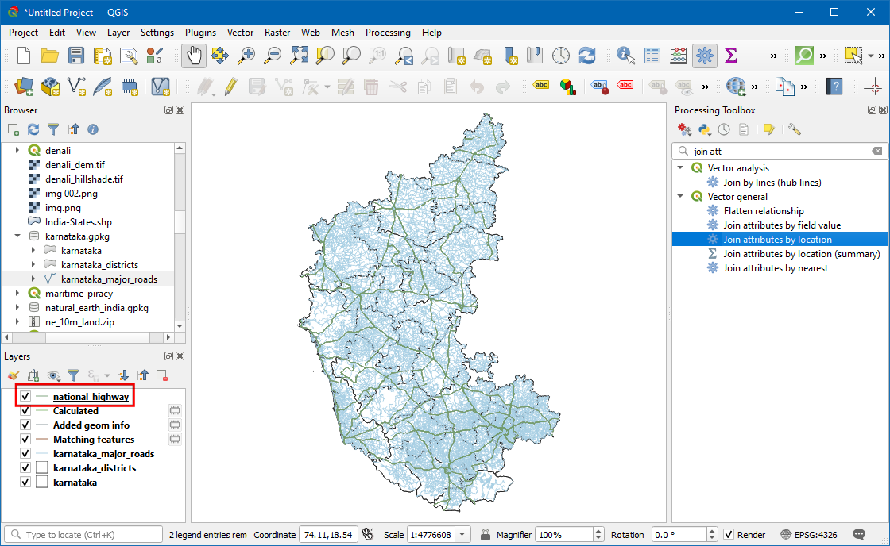
- The layer
national_highwayswill be added to the Layers panel.

We have now finished the first part of this exercise. Your output
should match the contents of the
Processing_Tools_Checkpoint1.qgz file in the
solutions folder.
1.1.1 Challenge
There are many features in the national_highways layer
where the "name" attribute is NULL. Find
an appopriate algorithm from the Processing Toolbox to create a new
layer with the features having NULL values removed.
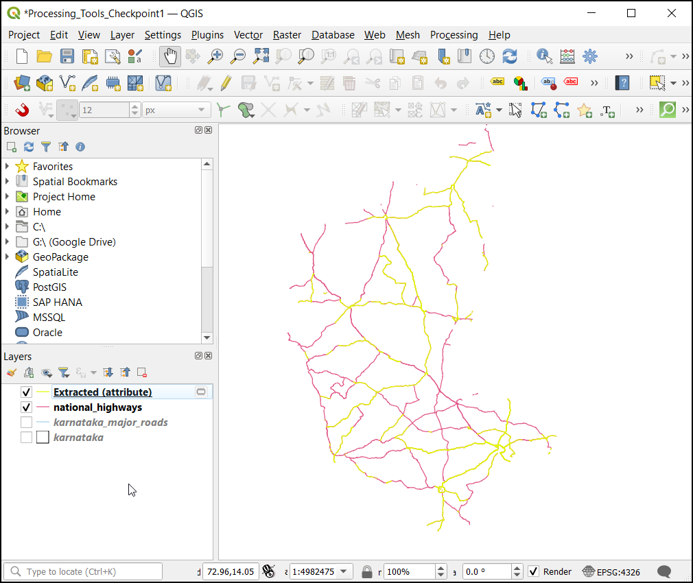
1.2 Spatial Join and Summary Statistics
We achieved the goal of the exercise, but we can explore the results a bit better if we can break down the results into a smaller administrative unit. Let’s try to calculate the length of national highways for each district in the state. This will require us to perform a spatial join and analyze the results using group statistics.
- Add the
karnataka_districtslayer from thekarnataka.gpkgfile. This layer contains the geometry of each district along with its name in the DISTRICT field.
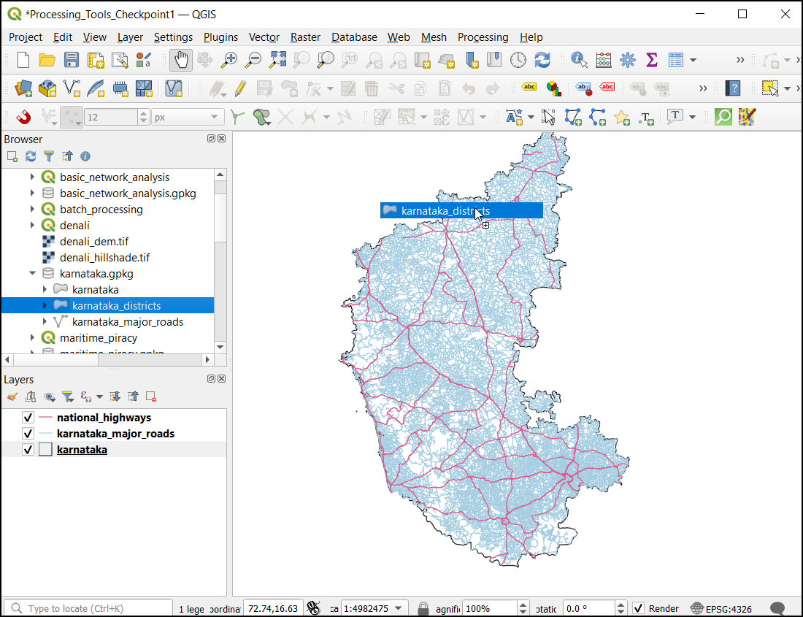
- To add the name of the district to the roads layer, we need to
perform a spatial-join. This is done using the Join attributes
by Location algorithm. Search and locate the tool in the
toolbox. Double-click to open it. For Join to features in,
select the
national_highwayslayer and By comparing to askarnataka_districts. This will join each feature in the roads layer to the intersecting feature from the districts layer. Select only the DISTRICT field to be added to the output. For the Join type, you have 3 options. Here we want to do a one-to-one join where the for each road feature, we want to select one district feature. Select the Take attributes of the feature with largest overlap only option.
In our dataset, the are some road geometries that cross district boundaries - causing part of the length being counted as part of another district. You can instead use the Sun line lengths algorithm from the Processing Toolbox which gives you accurate line lenghts contained in each polygon.
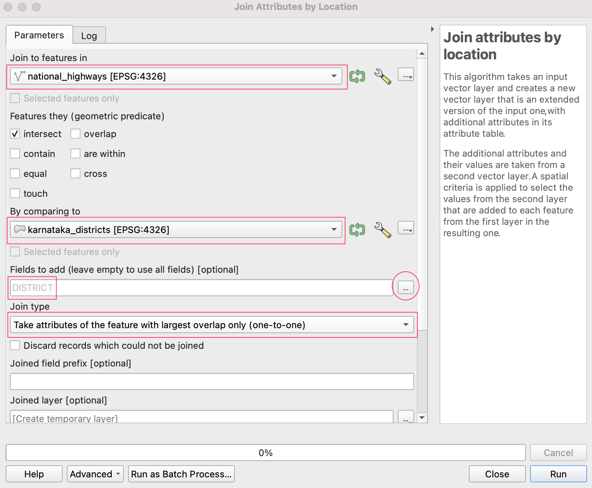
- The new layer
Joined layernow has the intersecting district name in the DISTRICT field. We can now sum the road lengths and group them for each district. You may recall that in earlier versions of QGIS, you needed a plugin called Group Stats to do this. But now we can do this via the built-in Statistic by Categories algorithm. Select theJoined layeras the Input vector layer, length_km as the Field to calculate statistics on. Select the DISTRICT field as the Field(s) with Categories.
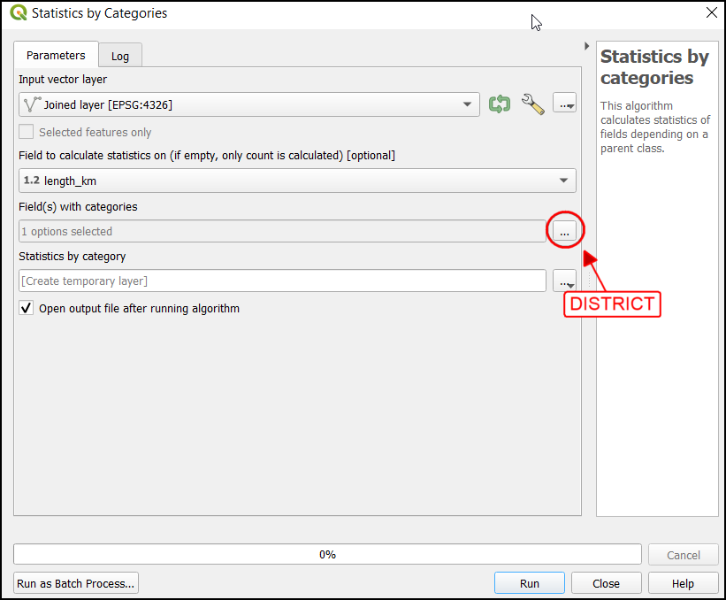
- Save the layer to the
karnataka.gpkgas a layer namednational_highways_by_districts. Click Run.
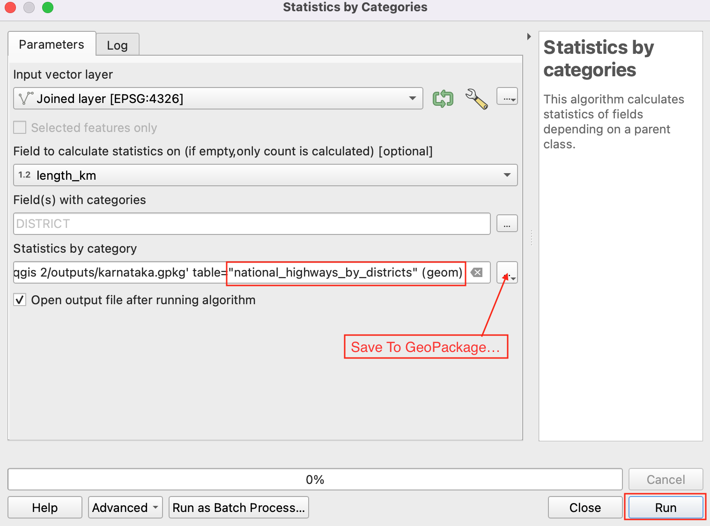
- The output of the algorithm is a table containing various statistics
on the
length_kmcolumn for each district. The values in the Sum column is the total length of national highways in the district.

Note that we did data processing, spatial analysis and statistical
analysis - all using just processing algorithms in a fast, reproducible
and intuitive workflow. We have now finish the first part of this
exercise. Your output should match the contents of the
Processing_Tools_Checkpoint2.qgz file in the
solutions folder.
1.2.1 Challenge
Apply the following formatting changes on the
national_highways_by_districts layer and save it to
karnataka.gpkg as a new layer
national_highways_by_districts_formatted.
- Rename the DISTRICT field to district.
- Rename the sum field to total_length.
- Round the lengths in the total_length field to
nearest integer using the
round()function. - Delete all remaining fields.
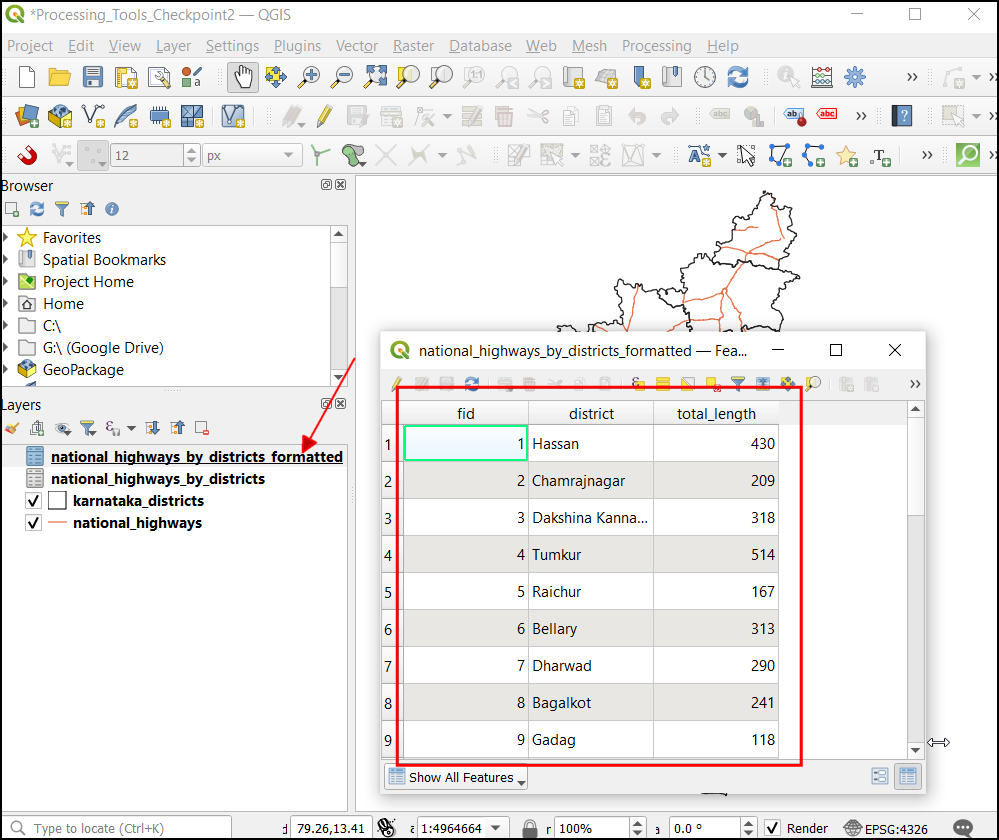
Hint: You can apply an expression on a field in the Refactor Fields algorithm by entering it in the Source Expression column.
Learn more
Did you know there are over 1000 tools in the Processing Toolbox that can help you do many different tasks? Click on the image to see my video where I share a few of my favorites tools.

2. Batch Processing
So far we have run the algorithm on 1 layer at a time. But each processing algorithm can also be run in a Batch mode on multiple inputs. This provides an easy way to process large amounts of data and automate repetitive tasks.
The batch processing interface can be invoked by right-clicking any processing algorithm and choosing Execute as Batch Process.
2.1 Clip Multiple Layers
We will take multiple country-level data layers and use the batch processing operation to clip them to a state polygon in a single operation.
- Open the batch_processing project.
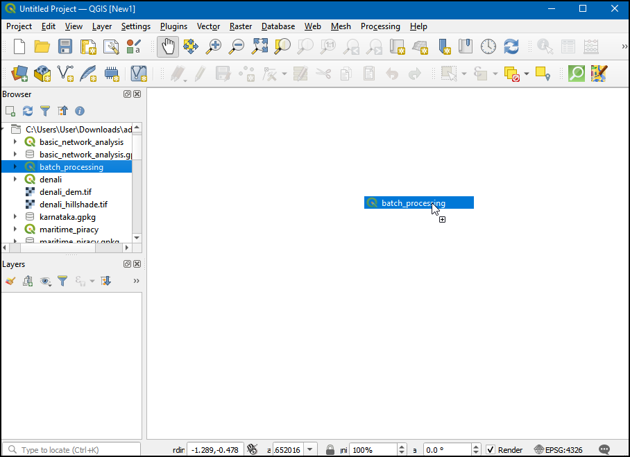
- Next, right-click on the
state boundarylayer, and click Zoom to Layer.
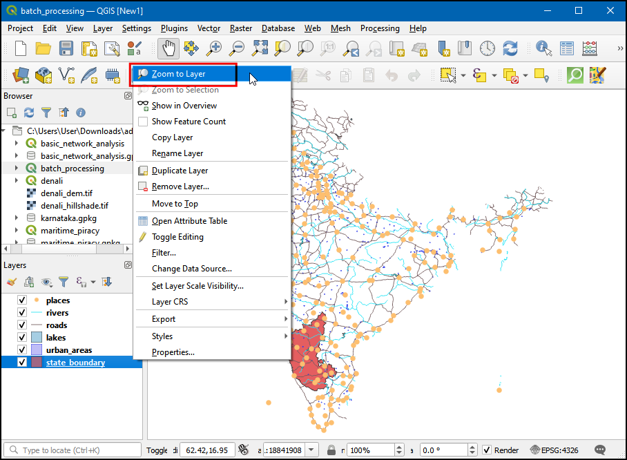
- Now that we have centered on our area of interest,select the
placeslayer. Go to the the Processing menu and select toolbox. Now in Processing Toolbox, search for clip, under Vector overlay → Clip right-click and select Execute as Batch Process...
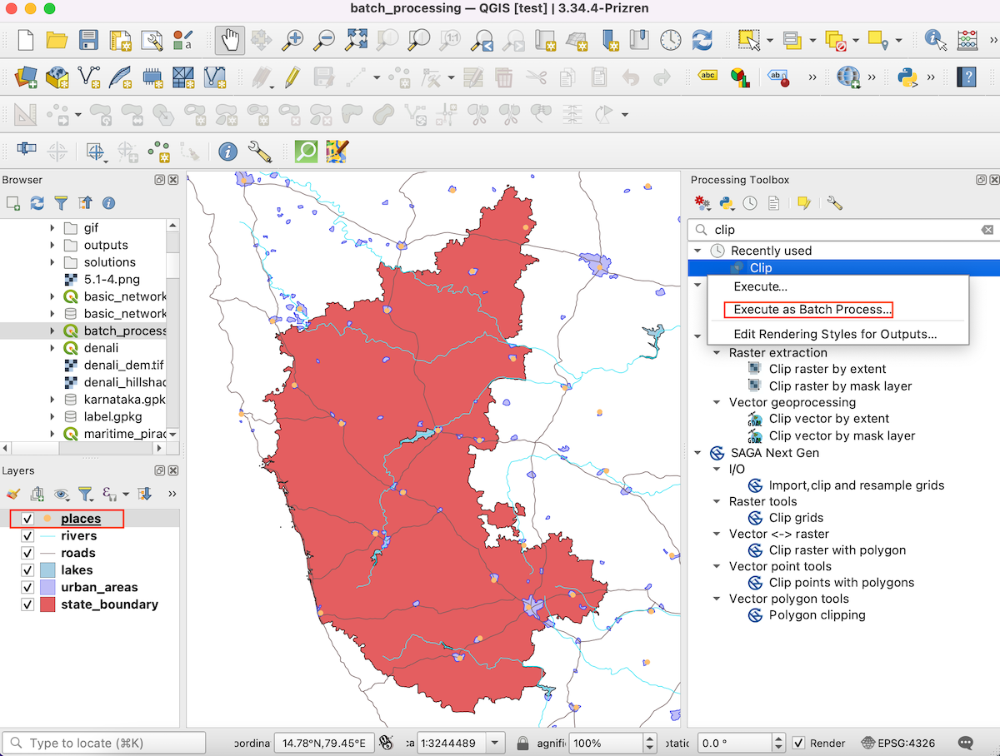
- In the Batch processing - Clip dialog box, click the Autofill… under the Input layer column and choose Select from Open Layers...
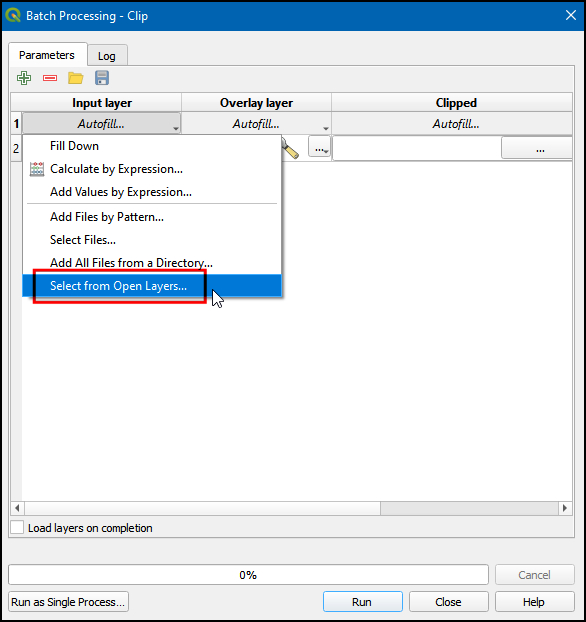
- Select all data layers except
state_boundaryandplacesthen click OK. Theplaceslayer is on the top and it gets selected by default.We won’t select it manually to avoid repetition.
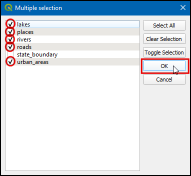
- Under Overlay Layer select the
state_boundary layer. Then click the drop-down button
near Autofill… and choose to Fill Down. This
will auto-populate all the Overlay Layer with the
state_boundarylayer.
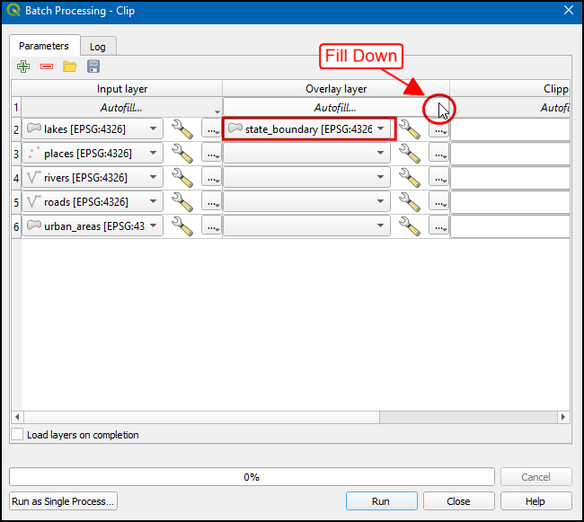
- Under Clipped, select … button to add the output filenames.
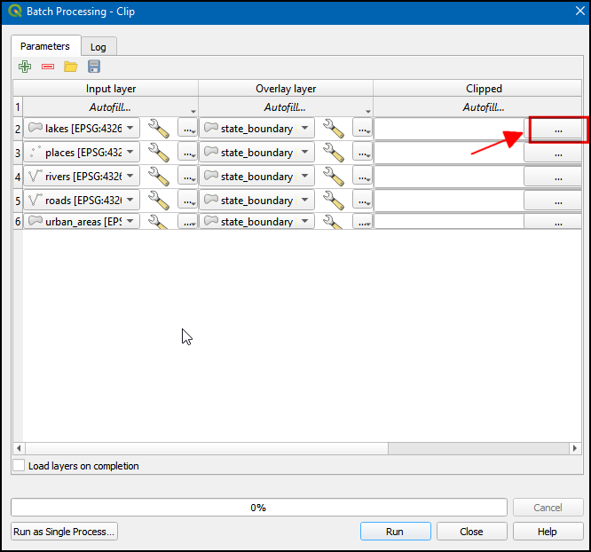
- In the Save File dialog box, enter the File name
as
clipped_. This is just the prefix of the name that you will auto-complete in the next step. Select GPKG files (.gpkg) in Save as type. Click Save.
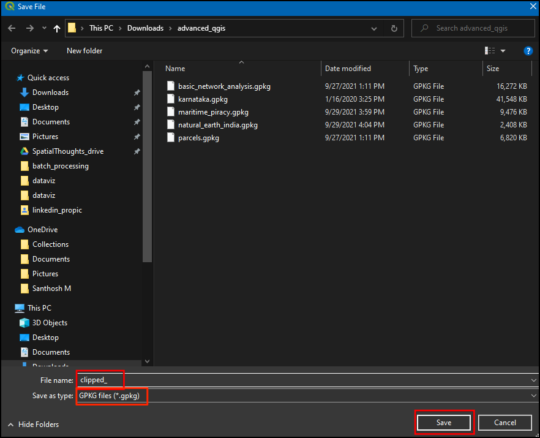
- Next, you will be prompted to choose the Autofill settings. Select to Fill with parameter values as the Autofill mode, and Input layer as the Parameter to use. Click OK.
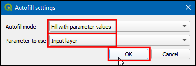
- Note that each row has a different file name now. The output file name is the result of the chosen prefix and the autofill settings. Make sure the Load layers on completion box is checked and click Run.
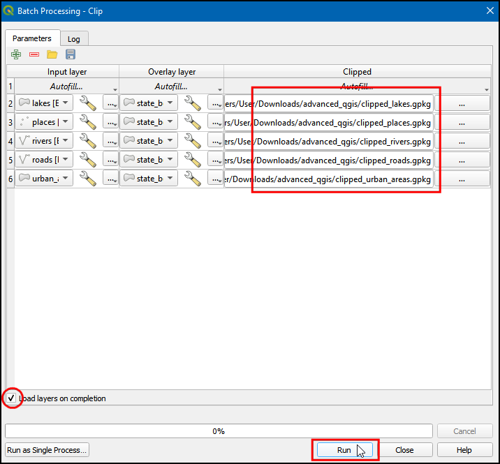
- The resulting clipped layers will be added to the Layers panel. Turn off all previous layers in the Layers panel to see the results clearly. We can now combine all the clipped layers into a single geopackage file for ease of sharing. Now in the Processing Toolbox, search and select the Package Layers.
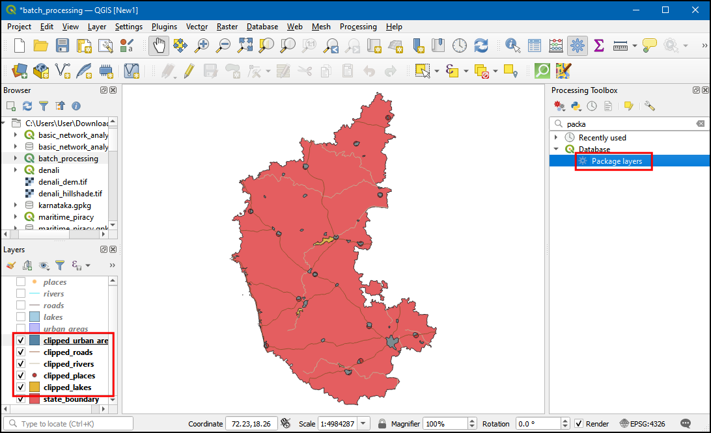
- In the Package Layers dialog box, in Input layers
choose all the clipped layers and in Destination GeoPackage
click … and select Save to File…. Then save
the file as
clipped.gpkg. Click Run
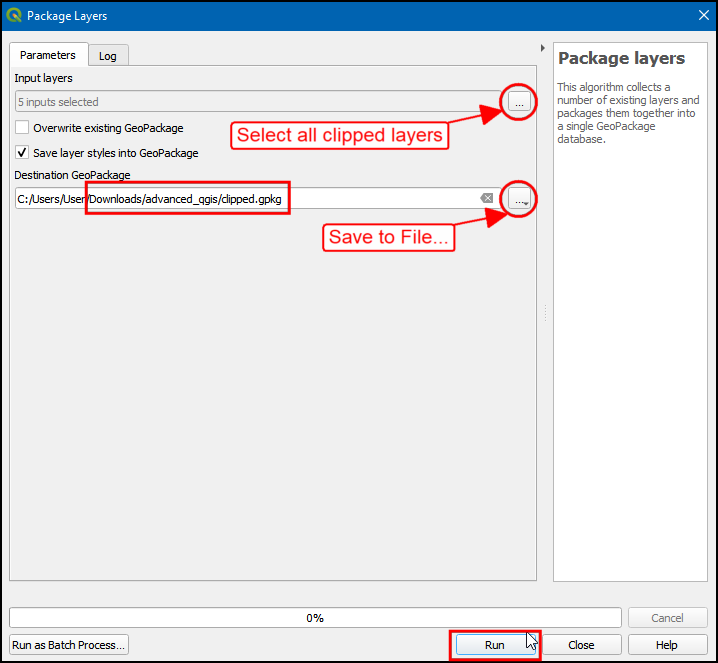
- Now a new
clipped.gpkggeopackage layer will be created with all the clipped layers in it.
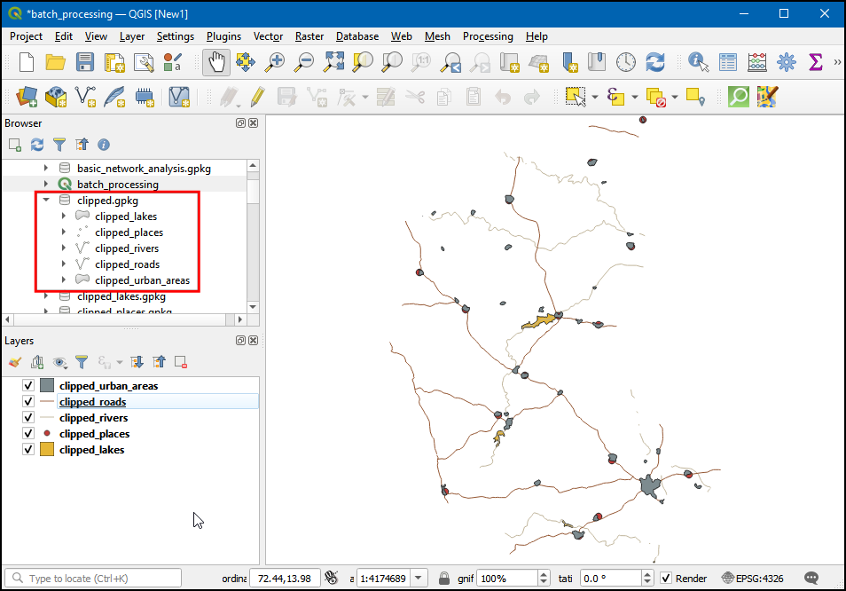
Your output should match the contents of the
Batch_Processing_Checkpoint1.qgz file in the
solutions folder.
2.1.1 Challenge
Reprojected all the clipped layers to a UTM projection. You can
reproject all the layers to the CRS WGS84 / UTM zone 43N
EPSG:32643. Save the reprojected layers to the same GeoPackage
clipped.gpkg
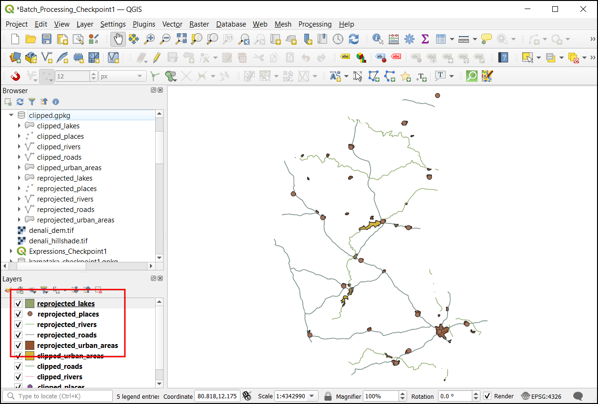
3. Model Designer
GIS Workflows typically involve many steps - with each step generating intermediate output that is used by the next step. If you change the input data or want to tweak a parameter, you will need to run through the entire process again manually. Fortunately, Processing Framework provides a model designer that can help you define your workflow and run it with a single invocation. You can also run these workflows as a batch over a large number of inputs.
3.1 Workflow Automation
National Geospatial-Intelligence Agency’s Maritime Safety Information portal provides a shapefile of all incidents of maritime piracy in the form of Anti-shipping Activity Messages. We can create a density map by aggregating the incident points over a global hexagonal grid.
The steps needed to create a hex-bin layer suitable for visualization is as follows:
- Reproject the input to an equal-area projection
- Create a global hexagonal grid layer
- Select all grids that intersect with at least 1 point
- Count points within each grid
We will now learn how to build a model that runs the above processing steps in a single workflow.
- Open the maritime_piracy project.

- Launch the modeler from Processing → Model Designer
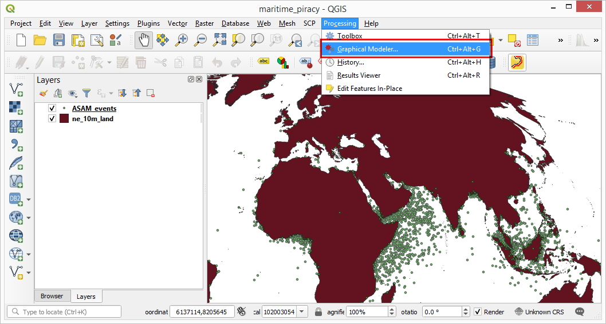
- In the Processing Modeler dialog, locate the Model
Properties panel. Enter
piracy_hexbinas the Name of the model. Note that there is a History panel in the bottom left, which keeps track of all the work done in Model Builder. Click the Save button.
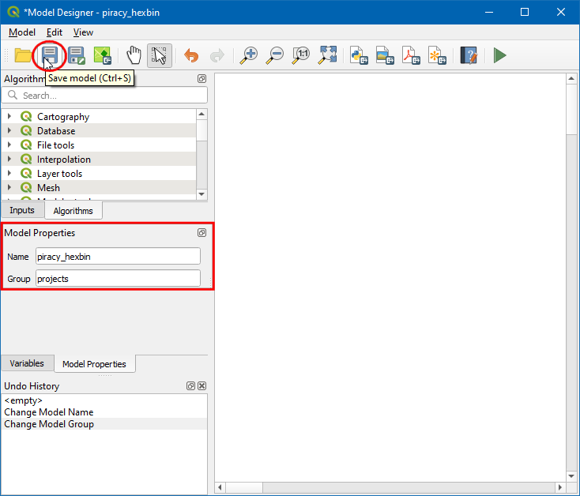
- Save the model as
piracy_hexbin.model3. Also, check the folder in which it is being saved. Processing → models, from this location QGIS will read the model by default.

- Now, we can start building a graphical model of our processing pipeline. The Processing modeler dialog contains a left-hand panel and the main canvas. On the left-hand panel, locate the Inputs panel listing various types of input data types. Scroll down and select the + Vector Layer input. Drag it to the canvas.
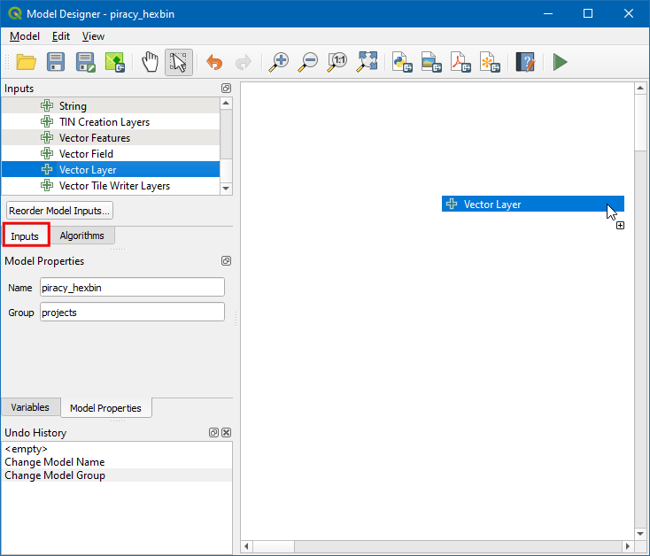
- Enter Input Points as the Description and Point as the Geometry type. This input represents the piracy incidents point layer.

- Next, drag another + Vector Layer input to the canvas. Enter Base Layer as the Description and Polygon as the Geometry type. This input represents the natural earth global land layer in which we will use as the extent of the grid layer.
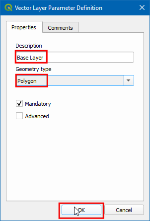
- As we are generating a global hexagonal grid, we can ask the user to supply us with the grid size as an input instead of hard-coding it as part of our model. This way, the user can quickly experiment with different grid sizes without changing the model at all. Select a + Number input and drag it to the canvas. Enter Grid Size as the Parameter name, Integer as the Number Type, 200000 as Default Value, and click OK.
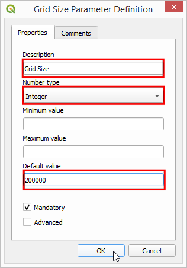
- Now that we have our user inputs defined, we are ready to add processing steps. All of the processing algorithms are available to you under the Algorithms tab. The first step in our pipeline will be to reproject the base layer to the Project CRS. Search for the Reproject layer algorithm and drag it to the canvas.
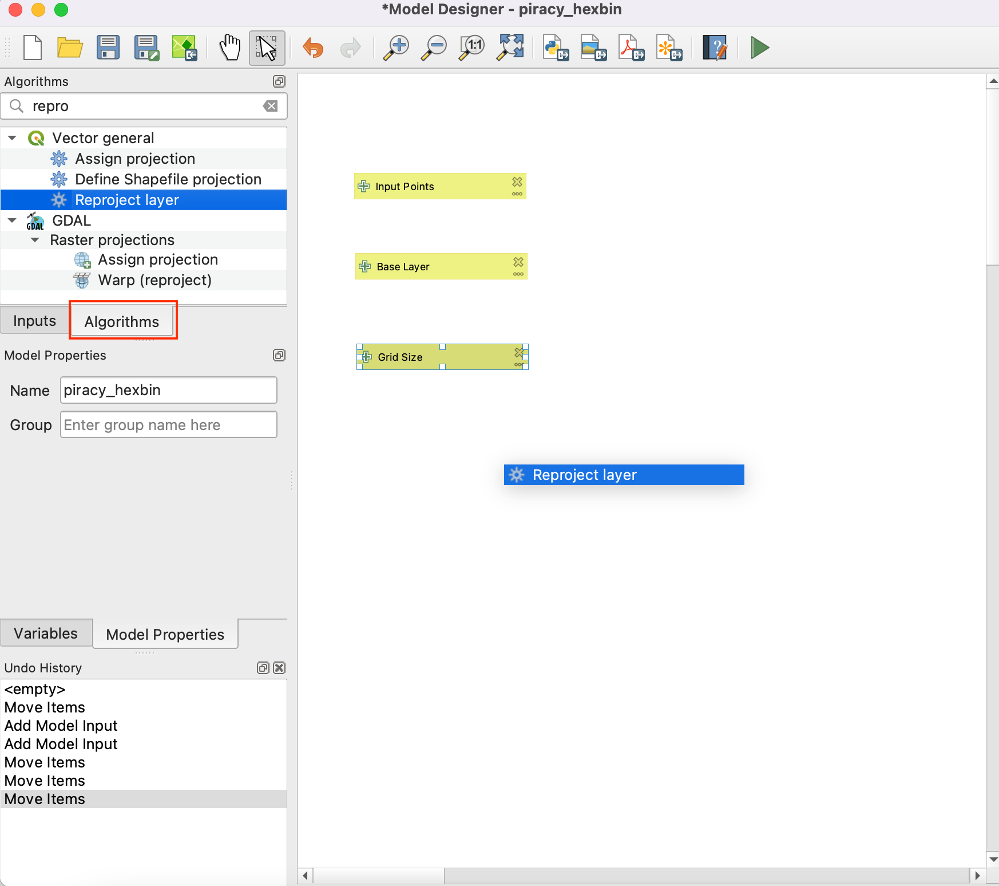
- In the Reproject layer dialog, select Base Layer, by clicking the button under the Input Layer and select Model Input as the Input layer. Check the Use project CRS as the Target CRS. Click OK.
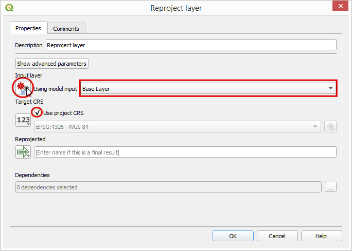
- In the Processing Modeler canvas, you will notice a connection
appear between the
+ Base Layerinput and theReproject layeralgorithm. This connection indicates the flow of our processing pipeline. The next step is to create a hexagonal grid. Now search for the Create grid algorithm and drag it to the canvas.
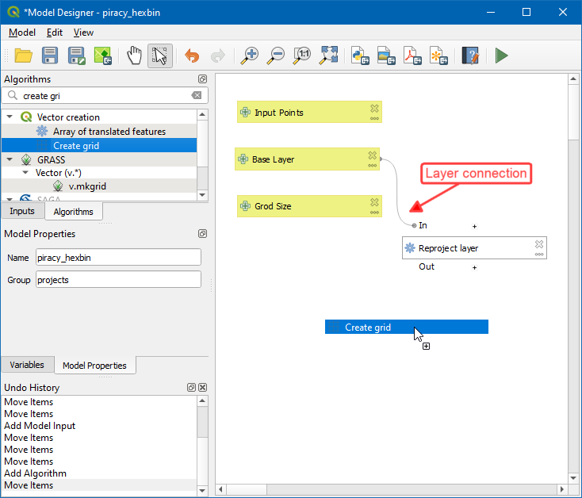
- In the Create grid dialog, choose Hexagon (polygon) as the Grid type. Select Algorithm Output by clicking the button under Grid extent and choose ‘Reprojected’ from the algorithm ‘Reproject Layer’ as the Grid extent.
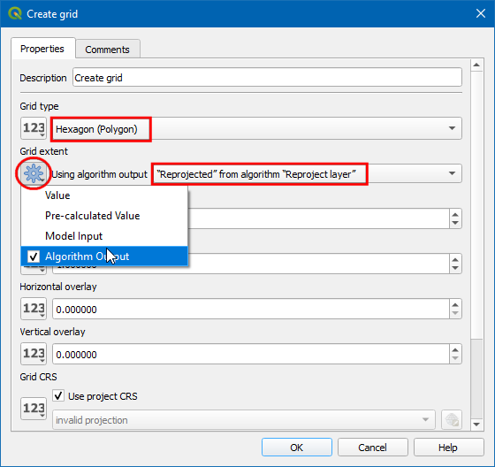
- Select Model input by clicking the button under Horizontal Spacing and choose Grid Size as the Horizontal Spacing. Click OK.
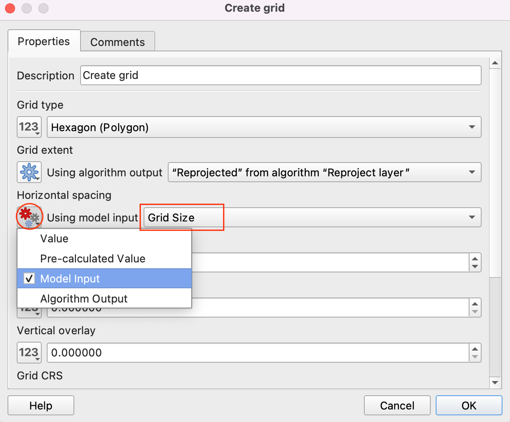
- Select Model input by clicking the button under Vertical Spacing and choose Grid Size as the Vertical Spacing. Click OK.
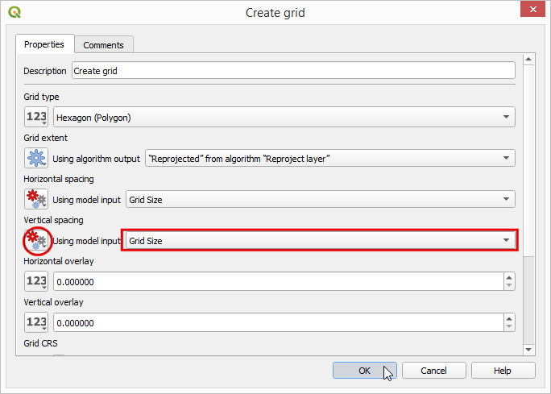
- At this point, we have a global hexagonal grid. The grid spans the full extent of the base layer, including land areas and places where there are no points. Let us filter out those grid polygons where there are no input points. Search for Extract by location algorithm and drag it to the canvas.
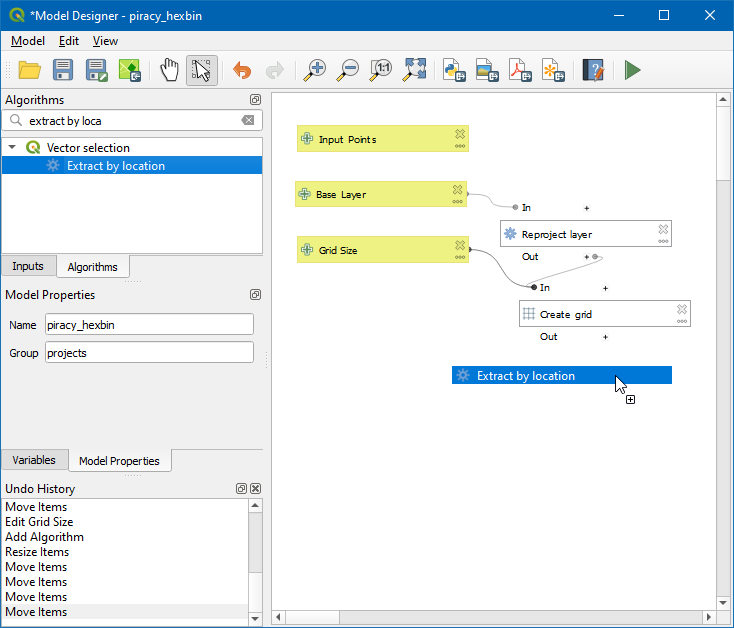
- Select Algorithm Output from the icon below Extract features from. Now choose ‘Grid’ from the algorithm ‘Generate Grid’. Click … at the right end.
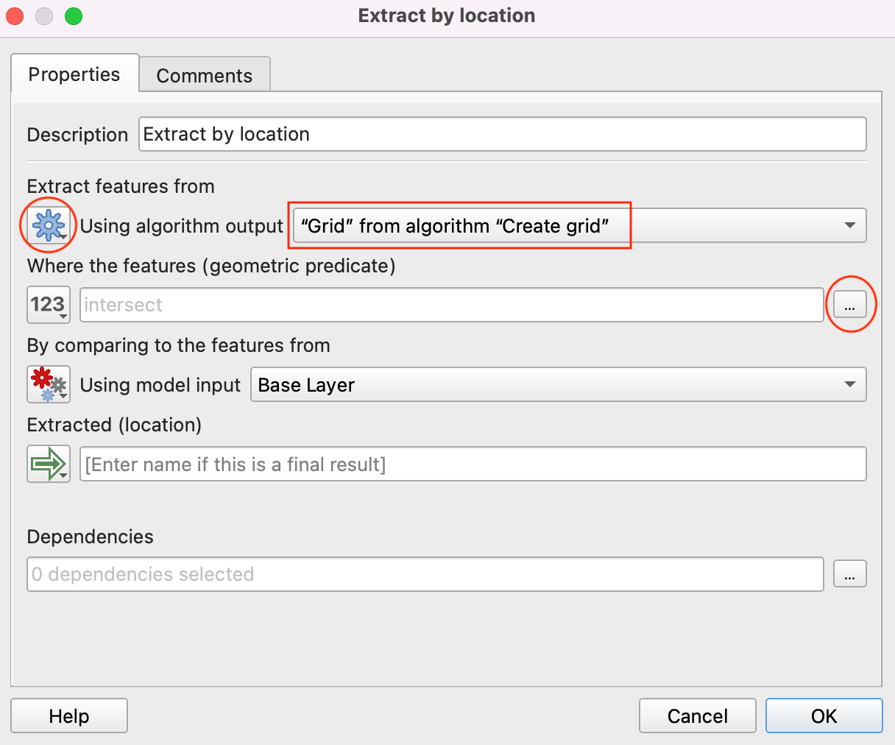
- Select Intersect by clicking the button, as Where the features(geometric predicate). And click the triangle button to go back to the previous window. Now click OK.
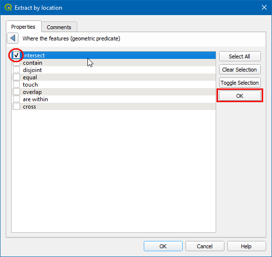
- Select Model input by clicking the button under By comparing to the features from and choose Input Points as By comparing to the features from. Click OK.
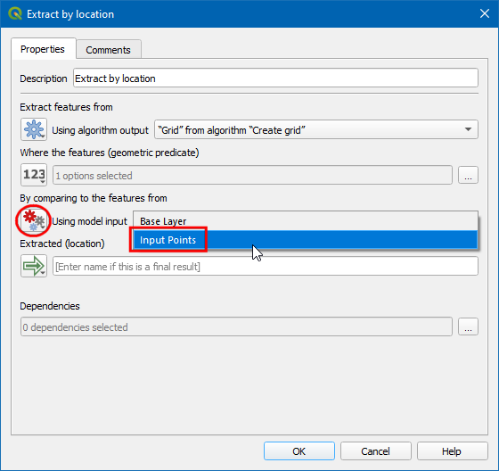
- Now, we have only those grid polygons that contain some input points. To aggregate these points, we will use Count points in polygon algorithm. Search and drag it to the canvas.
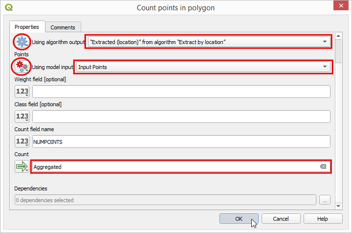
- Select Algorithm Output by clicking the button under Polygons and choose ‘Extracted (location)’ from algorithm ‘Extract by location’ for Polygons. Now, Select Model Input by clicking the button under Points and choose Input Points for Points. Type NUMPOINTS in Count field name. At the bottom, name the Count output layer as Aggregated. Click OK.
- The model is now complete. Click the Save button.
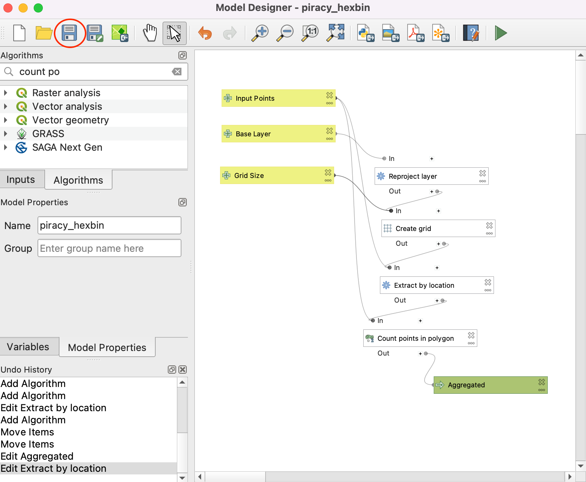
- Switch to the main QGIS window. You can find your newly created model in the Processing Toolbox under Models →piracy_hexbin. Double-click to run the model.
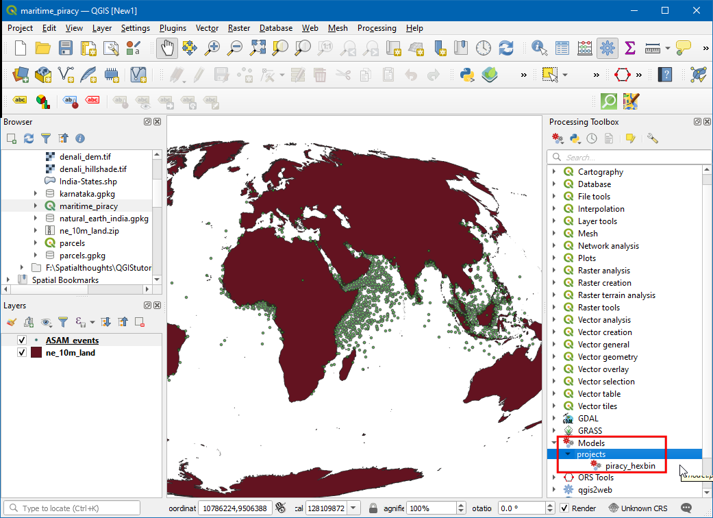
- Our Base Layer is the
ne_10m_landand the Input Points layer isASAM_events. The Grid Size needs to be specified in the units of the selected CRS. Enter100000as the Grid Size. Grid size is in the unit of the current CRS, which is meters. Click Run to start the processing pipeline. Once the process finishes, click Close.
- You will see a new layer
Aggregatedloaded as the result of the model. As you explore, you will notice the layer contains an attribute called NUMPOINTS containing the number of piracy incidents points contained within that grid feature.
- To ensure that you are always able to reproduce your results, it is recommended to bundle the model in your project. The modeler interface has a button Save model in project. Click on it to embed the model in your QGIS project file.
- Once the model is embedded, Whenever you open the project, the model will be available to the user under the Project models in the Processing Toolbox.
Your output should match the contents of the
Modeler_Checkpoint1.qgz file in the solutions
folder.
3.1.1 Challenge
Add a step to extract the grid with the highest piracy incidents.
Hint: The expression maximum("NUMPOINTS") will give you
the highest value contained in the "NUMPOINTS" field. Use
it to build your complete expression.
Concept: Spatial Indexing
When you ran your model, you may have noticed a warning message No spatial index exists for the input layer, performance will be severely degraded. This is because certain spatial queries make use of a spatial index and QGIS warns you when having a spatial index can speed up your operations. PostGIS documentation has a good overview of spatial indexes and why they are important.
You can compare a spatial index to a book index. When you want to search for a particular term, rather than scanning each page sequentially, you can speed up your search by looking up the index and directly going to the pages where the word appears. Spatial indexes work in similarly. You spent the effort once to create the index and all subsequent operations can make use of it. When you create a spatial index, each feature’s bounding box is used to establish its relationship with other features. This is stored alongside the dataset and can be used by algorithms. When trying to determine spatial relationships, the algorithms speed-up the look-up using the following two-pass method:
- Step 1: Use the spatial index to determine which target features’ bounding boxes intersect with the source feature’s bounding box. Since the spatial index already has computed this - this is very fast. The result is a list of candidate features.
- Step 2: Now that there is a small subset of candidate features, iterate over them and use their full geometry to evaluate exact intersections.
For large datasets, this approach helps reduce the processing time significantly.
3.2 Using Spatial Index
QGIS has built-in tools to create and use spatial indexes. Let’s see how we can create a spatial index for a layer and use it in our model.
- Double click on the
piracy_hexbinmodel from Processing Toolbox, select ne_10m_land as Base Layer, 200000 as Grid size and ASAM_events as Inputs Points. Click Run.
- Switch to Log, and note down the execution time of the model. In this instance we got 34.80 seconds (The exact time will vary depending on your computer configuration). Also note that it prompts a warning No spatial index exists for input layer, performance will be severely degraded.
- To create spatial index right-click the Aggregated layer and select Properties.
- In the Layer Properties dialog, switch to the Source tab. You will see the Create Spatial Index button. This button indicates that this layer does not currently have a spatial index. Click that button to create a spatial index. But we will use a better and more scalable way. Click OK and close the Layer Properties dialog.
- Go to Processing → Toolbox. Search for the algorithm Vector general → Create spatial index and double-click to launch it.
- Select Aggregated layer as the Input layer and click Run.
- Creating a spatial index is usually a fast operation. Once the algorithm finishes, right-click on the Aggregated layer and select Properties. Switch to the Source tab and you will see that the button has now changed to Spatial Index Exists - indicating that the layer now has a spatial index.
- While creating a spatial index on a layer like this is useful, it is
even more powerful to have the spatial index created during the
execution of our model. We will see how to add the spatial index
creation step in our model. Right-click the
piracy_hexbinmodel and select Edit Model…. Search Create spatial index in Algorithms tab and drag it to the model canvas.

- Choose Algorithm output from the button below Input Layer, and select “Grid” from algorithm “Create Grid”. Click OK.
- You will see that the newly added
Create spatial indexalgorithm is connected to theCreate gridalgorithm. But the workflow should be, Create grid → Create spatial index → Extract from location.

- Right-click the
Extract by locationlayer and select Edit. In Extract features from select “Indexed Layer” from algorithm “Create spatial index”.
- Now you will see the model diagram updated and the connection
changed between the
Create GridandExtract by locationlayer. Click Save model.
- Now return to the main canvas and select
piracy_hexbinmodel.
- Select ne_10m_land as Base Layer, 200000 as Grid size and ASAM_events as Inputs Points. Click Run.
- In this instance we got 3.39 seconds (The exact time will vary depending on your computer configuration). Also, note that it has executed 5 algorithms which is including creating the spatial index.
Your output should match the contents of the
Modeler_Checkpoint2.qgz file in the solutions
folder.
3.2.1 Challenge
Can you change the model so that instead of entering the grid size in meters, the user can enter the size in kilometers?
Hint: The Create Grid algorithm expects the size in meters, so you will have to convert the input to meters. Instead of using Model Input, use Pre-calculated Value to enter an expression.
3.3 Enabling Reproducible Workflows
GeoPackage is an open and flexible data format that makes data management simple. We saw how you can package multiple layers in a GeoPackage. We will now learn how to embed QGIS projects inside of a goepackage.
QGIS projects contain information of layer configuration, symbology, label positions and even models. We can make the reproducing your workflow even easier by embedding the QGIS Project in the same geopackage containing the source layers.
- Now, lets save this project in
martime_piracy.gpkggeopackage. Click Project → Save To → GeoPackage….
- In the Save project to GeoPackage dialog box, click … to browse to martime_piracy geopackage.
- Enter project name as
martime_piracyand click OK.

- Now in Browser, under
martime_piracy.gpkgthe project is saved. You now have just 1 GeoPackage file that contains all your input layers, styles, project and models. Sharing this 1 file will enable anyone to reproduce your output using the embedded model and layers.

Assignment
The following assignment is designed to help you practice the skills learnt so far in the course and explore automation using the model designer.
Your task is to create a model called Calculate Highway Statistics that will automate the workflow outlined in the previous section 1. Using Processing Toolbox.
Your model is expected to take following 3 inputs
- Roads Layer: A vector layer of the road network.
i.e.
karnataka_major_roads. - Admin Boundaries Layer: A vector layer containing admin
boundaries. i.e.
karnataka_districts - Highway Type: An enum input with 2 options: National Highway and State Highway.
Model Inputs
The model should take the input and calculate the total length of
highways in each admin polygon. The result should be a formatted table
containing 2 columns: district and
total_length. Test the model on the layers provided in the
karnataka.gpkg file in the data package.
Expected Model Output
Tips and Best Practices:
- Test your model at each step. After adding an algorithm, enter a name for the output, save the model and run it. The output will be loaded in QGIS. Ensure the generated output is as expected. If you get an error, fix it before adding another step.
- You need to extract the correct type of highways from the roads
layer based on the model input for the parameter Highway Type.
If the selected type is National Highway, you must
extract the features with
refcolumn values starting with NH. If the selected type is State Highway, you must extract the features withrefcolumn values starting with SH. You may use eitherifor theCASEconditionals to build your expression. - The Enum input type is used to define a set of pre-selected values that the user can pick from. The values are displayed as strings, but in the algorithm they are stored as integers. If the user selected the first option - its value will be 0. The second option will have the value 1 and so on.
- The Refactor Fields algorithm will need to be configured manually in the modeler. The input to that algorithm is an intermediate layer which has not been generated yet, so the model cannot pre-fill the values. Configure that algorithm from the main QGIS window and copy the parameter values from there.
- Use Modeler Tools → Raise message algorithm to display the value of any variable during the model execution.
4. 2D Animations
Time is an important component of many spatial datasets. Along with location information, time providers another dimension for analysis and visualization of data. If you are working with a dataset that contains timestamps or have observations recorded at multiple time-steps, you can easily visualize it using the Temporal Controller in QGIS 3.14 or above.
4.1 Animated Temporal Navigation
We will continue to work with the maritime piracy dataset. First, we will create a heatmap visualization and then animate the heatmap to show how the piracy hot-spots have changed over the past 2 decades.
- Open the maritime_piracy project from the data
package. There are thousands of incidents and it is difficult to
determine with more piracy. Rather than individual points, a better way
to visualize this data is through a heatmap. Select the
ASAM_eventslayers and click the Open the layer Styling Panel button in the Layers panel. Click the Single symbol drop-down.

- In the renderer selection drop-down, select Heatmap renderer. Next, select the Viridis color ramp from the Color ramp selector. Adjust the Radius value to 5.0. At the bottom, expand the Layer Rendering section and adjust the opacity to 75.0%. This gives a nice visual effect of the hotspots with the land layer below.
- Now let’s animate this data to show the yearly map of piracy
incidents. Right click on
ASAM_eventlayer, and choose Properties.
- In the layer properties dialog box, select the Temporal Settings tab and enable it by clicking the checkbox.
- The source data contains an attribute
dateofocc- representing the date on which the incident took place. This is the field that will be used to determine the points that are rendered for each time period. Select Single Field with Data/Time in Configuration Drop down menu, dateofocc as Field. Click OK.

- Now a Clock symbol will appear next to the layer name. Click on the Temporal Control Panel (Clock icon) from Map Navigation Toolbar.
- Click on the Animated Temporal Navigation (play icon).
- By default, the date range is set to the current date. Click Set to Full Range button to set the date range from the dataset.
- Now the data will be set to
2000-01-02to2018-01-01. Update the start date to2000-01-01and set the Step to years. Click play button to start rendering.
- It will be useful to add a label to the animation showing the date of the animation frame being displayed. We can use the Title Decoration to place that label. Go to View → Decorations → Title Label Decorations. Click the checkbox to enable it and then the Insert an Expression button.
- Enter the following expression to display the year and click OK.
format_date(@map_start_time, 'yyyy-MM-dd')
- Select font size as 25, set background color as white. In placement choose Top Center. Now click OK.
Your output should match the contents of the
2DAnimation_Checkpoint1.qgz file in the
solutions folder.
Challenge 4.1.1
Update the heatmap to use a weight field. We want to give more
importance to more serious attacks. We can use the Hostility Description
contained in the hostility_D field of the
ASAM_events layer and assign weights to different types of
events. Once created, style the new layer using the Heatmap
renderer with the weight value.
Hint: Use the Field Calculator algorithm to create a new
layer with a field called weight. You can use the
expression below to assign different weights to each category.
CASE
WHEN "hostilit_D" = 'Suspicious Approach' THEN 1
WHEN "hostilit_D" = 'Kidnapping' THEN 2
WHEN "hostilit_D" = 'Pirate Assault' THEN 5
WHEN "hostilit_D" = 'Naval Engagement' THEN 10
ELSE 1
END4.2 Exporting Animation
- To export these as images and convert them as GIF select the Export Animation (save icon) in the Temporal controller window.

- Choose the directory to save the images and select the
ne_10_landfor map extent.

- Once the export finishes, you will see PNG images for each year in the output directory. Now let’s create an animated GIF from these images. There are many options for creating animations from individual image frames. We like [ezgif.com] for an easy and online tool. Visit the site and click Choose Files and select all the .png files. You may want to sort the images by Type to allow easy bulk selection of only .png files. Once selected, click the Upload and make a GIF! button.

Challenge 4.2.1
Export your animation and create an animated GIF showing the changes in piracy hotspots over time.
4.3 Animating GPS Tracks
GPS tracks have become ubiquitous in modern life. With GPS built-into most phones, many of us capture the tracks while running or biking outdoors. Cab companies use GPS tracks collected during the trip to determine fares. Delivery and logistics companies store and analyze millions of GPS tracks from their assets to derive location intelligence.
We will now learn how to collect a GPS track and create an animation from it. We will produce an animation that looks like shown below.

4.3.1 Collecting a GPS Track
We encourage you to collect your own GPS track for this exercise. You can collect a GPS track from a smartphone and download it to your computer. The default format for storing GPS tracks is GPS Exchange Format (GPX). It is a XML-based text format that allows storing points, tracks and routes in a single file. You can use any of the options below to capture your track.
- Android: There are many GPS logger apps. We recommend the open-source GPS Logger app.
- iOS: A good free and open-source app is the Open GPX Tracker for your iPhone.
- Strava: You can also record your activity using the popular fitness tracking app Strava. Once the activity is uploaded, you can use the GPX Export option to download a GPX file.
If you do not have your own data, you can use the
sample_gps_track.gpx file from your data package.
4.3.2 Loading a Basemap
We will use a plugin called QuickMapServices to select and load a basemap.
- Open QGIS. From the Plugins menu choose Manage and Install Plugins….

- The Plugins dialog contains all the available plugins in QGIS. Under the All tab, search for quickmapservices. It has different basemaps that can be used based on your purpose. Click on the Install Plugin, to add this plugin to QGIS.

- Once installed, check the box next to the QuickMapServices label to enable it. Click Close.

- Now you will see a new Web menu added to the menu-bar. Go to Web → QuickMapServices menu. You will see some map providers and available basemaps. We can enable a few more providers to have many more options. Click on the Web → QuickMapServices → Settings.

- In the Settings dialog, switch to the More
services tab. Click on the
Get contributed packto download 3rd-party basemaps.
You will see a warning against using contributed services. Some of these services may have restrictions on their usage and/or attribution requirement that you need to follow. Please review them before using them in your project.

- Once the new services are added, you will see many more options in the Web → QuickMapServices menu.

4.3.3 Visualizing and Creating Animation
- Start a new QGIS Project. Locate your GPS file in the
Browser panel. If you are using the track from the data
package, locate the
sample_gps_track.gpxfile. Drag and drop it to the canvas.
- As the file contains multiple data types, a pop-up will ask us to
select the layers to add. Hold the Shift key and select both
track_pointsandtrackslayers. Click Add Layers.
- Two new layers will be added to the Layers panel. To add some context to the map, we should add a basemap. A dark background map works best for the visualization we want to create. Go to Web → QuickMapServices → CartoDB → Dark Matter [no labels] layer.
- Turn off the visibility of the
track_pointslayer by un-checking the box next to it. Select thetrackslayer and click Open the Layer Styling Panel. You can change the line Color to Blue and Width to 0.2.

- Turn on the visibility of the
track_pointslayer and drag it above thetrackslayer. This changes the rendering order and the points will be drawn on top of the line layer. In the Layer Styling Panel, select Simple marker symbol. Change the point Size to1. Choose a lighter shade of Blue as the Fill color and aTransparent Strokeas Stroke color.

- Depending on how fast you were moving and how often the data was collected, you may have a lot of points. You may want to filter out some points so we can create a meaningful animation. We can apply an expression to display only a subset of points from the layer using Geometry Generators. Change the Symbol layer type from Simple Marker to Geometry generator.

- Enter the following expression. The following expression displays every 10th point from the original track. Adjust that number for your dataset.
if(@id % 10 = 0, $geometry, NULL)- We want to give a glow effect to the points as it is animating. To
achieve this effect, we will apply a different symbology. Right-click
the
track_pointslayer and choose Duplicate Layer.

- A new layer
track_points copywill be added to the Layers panel. Drag it on top of the stack in the Layers panel. In the Layer Styling Panel for the duplicatedtrack_points copylayer, choose bright neon as the Color from the color picker and increase the size to 3. Check the Draw Effects option and click the Effects button next to it.
- In the Effects Properties panel, check Outer Glow.
Select
2.0for both Spread and Blue radius. Click Go Back.
- Now we are ready to animate the points. Right-click the
track points copylayer and select Properties.
- Switch to the Temportal tab. Check the Dynamic Temporal
Control button. Select
Single Field with Date/Timeas the Configuration. Set time as the Field. Click OK.
- You will notice that a clock icon now appears to the layer
indicating that this layer can now be controlled by the Temporal
Controller. Next, right-click the
track_pointslayer and select Properties.
- Repeat the same configuration as before. But this time, check the Accumulate features over time. This setting will keep the points from the past timestamps visible as the layer is animated.
- Locate the Temporal Controller Panel button from the Map Navigation Toolbar. The Temporal Controller panel will appear at the top of the map canvas. Click the Animated temportal navigation button.

- Next, click the Set to Full Range button to load the start and end times automatically. Set the Step to 10 and from the drop-down select seconds. You can adjust the step size later depending on your dataset. Click the Temporal Settings button on the top-right corner.
- Set the Frame rate to 10. Click Go back.
- Check the Loop button and hit the Play button. You will see the map canvas animate to show the trip progress.
Your output should match the contents of the
GPS_Animation_Checkpoint1.qgz file in the
solutions folder.
4.3.4 Placing Labels on Animation
In the previous exercise, we used the Title Label Decorations to display the time of the animation. There is another approach that offers more flexibility in label placement and styling. Let’s add a label to display the timestamp.
- We will create a new point layer and add a point feature at the place where we want the label. Go to Layer → Create layer → New Geopackage Layer.

- In the New GeoPackage Layer dialog, click the … button and browse to a directory on your computer. Enter the name label.gpkg. Select Point as the Geometry type and click OK.
- Click Toggle Editing button from the Digitizing Toolbar. Once enabled, click the Add Point Feature button. Click at the location where you want to place the timestamp label.

- In the Feature Attribute pop-up, click OK.

- A point will be added on the canvas. Select the
labellayer and click Open the Layer Styling Panel button. Switch to the Labels tab and enter the following expression. GPS timestamps are in UTC, so we uses theto_interval()function to adjust the timestamp to the local timezone. Note the use of the | character which will allow us to split the label in multiple lines later on.
format_date( @map_start_time + to_interval('5 hours 30 mins'), 'dd MMM, yyyy| hh:mm:ss')
- Next, change the Font, Size and Style as per your liking. Once done, switch to the Formatting tab.
- Scroll down and under the Multiple lines section, enter | as the Wrap on character value. Change the Alignment to be Right.

- Once you are satistfied with the label, switch to the Symbology tab and set the Size to 0. This will make the point marker disappear.

- It will be useful to add a title label to the animation as well. Go to View → Decorations → Title Label Decorations. Click the checkbox to enable it and then enter a title for your animation. Adjust the Font as per your liking. Select Bottom Center as the Placement. You can also add Margin from edge by entering 5 as the Vertical distance. Click OK.

- If you preview your animation, you will notice that the label does
not update. Let’s fix it. Right-click the
labellayer and click Properties. Switch to the Temporal tab. Check the Dynamic Temporal Control button and select Redraw Layer Only. This option merely refreshes the layer on every frame of the animation.
- Back in the main QGIS canvas, open the Temporal Controller and preview your animation. The timestamp should now update with the animation.

Your output should match the contents of the
GPS_Animation_Checkpoint2.qgz file in the
solutions folder.
5. 3D Animations
Recent versions of QGIS include native support for 3D data. Using this feature, you can easily view, explore and animate 3D elevation data. Note that your computer must have a supported graphics card for this feature to work.
5.1 Create a 3D Visualization
We will work with a 5m Digital Elevation Model (DEM) of Denali peak in Alaska and create a 3D visualization of the dataset.
- Open the denali project from the data package. The data contains the raw DEM layer and a hillshade layer created from the DEM.
- Let’s create a colorized hillshade. It is possible to drape an image
or colorized DEM to a hillshade layer using QGIS’s Layer
Blending Modes. Click on the Open the Layer Styling
Panel icon. In the Layer styling panel, choose
denali_hillshadeand under Layer Rendering choose Multiply as Blending mode. The selected layer will be blended with the bottom layer. This is a great way to visualize your elevation dataset.
- Let’s view this data in 3D. Go to View → 3D Map Views → New 3D Map View.

- A new map window will open containing the rendered map layers from the main canvas. Click the Configure button.
- In the Terrain section, select DEM (Raster
Layer) as the Type. Select
denali_demlayer as the Elevation. Click OK.
- In the 3D view, you can hold the Shift key and drag your mouse to tilt the top-down view. You will see the map in 3D. You can also use the controls on the right-hand panel to tilt, zoom and pan the view.

Your output should match the contents of the
3DAnimation_Checkpoint1.qgz file in the
solutions folder.
5.2 Create a 3D Fly-through
- Now we will create an animation. Click the Animations button in the toolbar. To animate the view, we must define certain keyframes. Once you define a specific view for keyframes at different times, the system will try to smoothly animate the views between them. You can use the slider to go to a specific time, use the controls to set a specific view and click the + button to add a keyframe. Click the Play button to see the animation in action.

- Once you are satisfied, click the Export Animation Frames button. Choose an output directory on your computer and click OK. Individual frames will be rendered and saved as separate files.
5.2.1 Challenge
As we did in the previous section, you can use a service such as ezgif.com to create a GIF/Video from these frames.

6. Summary Aggregate Expressions
QGIS expression engine has a powerful function called ‘summary aggregates’ that allows evaluating a feature’s geometry and attributes with those of another layer. Expressions can be used for static calculations as well as on-the-fly computations, such as labels, virtual fields, symbology etc. This enables some powerful use cases.
The summary aggregate function operates on all the values from a different layer, returning a single summary value. The syntax of the aggregate function is as follows
aggregate(
layer:='layer name or id',
aggregate:='aggegate type',
expression:='expression to aggregate',
filter:='optional filter expression,
concatenator:='optional string to use to join values',
order_by:='optional expression to order the features'
)6.1 Auto-populate Field Values
We will work with a land parcels data layer provided by the City of San Francisco. The goal of this exercise is to demonstrate the use of aggregate expression for on-the-fly computation when digitizing new features.
- Open the parcels project from the data package.
Select the
boundarylayer and click the Open Field Calculator button.
- Add a new field named
countwith the following expression. The expression is reading the features from theparcelslayer and giving an aggregate count of the features. You will notice that the the result will be displayed at the bottom of the window.
aggregate(
layer:= 'parcels',
aggregate:='count',
expression:=fid
)
- Now we can apply the same concept in a dynamic calculation. Back in
the main QGIS window, select the
polygonslayer and right-click it. Select Properties.
- Switch to the Attributes Form tab. Select the field
countand choose Text Edit as the Widget Type. At the Default Value field at the bottom, enter the following expression. Note that additional filter value. Here the$geometryrefers to the geometry of theparcelslayer andgeometry(@parent)refers to the geometry of feature from thepolygonslayer. Click OK.
aggregate(
layer:= 'parcels',
aggregate:='count',
expression:=fid,
filter:=intersects($geometry, geometry(@parent))
)- Back in QGIS, click the Toggle Editing button and
draw a polygon using the Add Polygon Feature button.
Right-click to finish the drawing. As soon as you finish, the count of
intersecting features will be calculated by the aggregate expression and
displayed in the
countfield.

- There are many different types of aggregates available. We can use
an aggregate called concatenate to compute a
comma-separated text of all feature ids. Go to the Attribute
Form properties again and select the
parcelsfield. Enter the following expression as the Default Value.
aggregate(
layer:= 'parcels',
aggregate:='concatenate',
concatenator:=',',
expression:=to_string(fid),
filter:=intersects($geometry, geometry(@parent))
)- Now when to add a new feature, all the intersecting feature ids will be displayed along with the count.
Your output should match the contents of
the Expressions_Checkpoint1.qgz file in the
solutions folder.
6.1.1 Challenge
Add a new field in the parcels layer called
neighbors with the count of neighboring polygons. Use
that field to find the parcel having the highest number of
neighbors.
Hint: You can use the aggregate() function on the same
layer to compare each feature against all other features in the layer.
The @layer variable contains the name of the current layer,
so you can use the below expression
aggregate(
layer:=@layer,
aggregate:='count',
expression:="fid",
filter:=touches($geometry, geometry(@parent)))
Supplement
Using Conditions in Modeler
A key feature introduced in QGIS 3.14 was the ability for models to have a conditional branch. This allows models to check for a condition and execute a different part of the model based on the output of the condition. This is equivalent to If/Else statements in a programming language.
Let us develop a Conditional branch in the
piracy_hexbin model covered in the previous section. We
will add a new check-box input Use Spatial Index - that allows
the user to specify whether to use a spatial index in the model. We will
add a conditional branch that takes the following actions:
- If the Use Spatial Index option is selected, the model will create a spatial index for the grid layer and use it in the subsequent steps.
- If the option is not selected, the model will proceed without generating a spatial index.
- Right-click the
piracy_hexbinmodel and select Edit Model….
- Search for +Boolean in Inputs tab and drag to canvas.
- Give Description as Use Spatial Index, leave Checked unticked. Click OK.
- Now, search for Conditional branch in Algorithms tabs and drag to canvas.

- Click the Add button and select the Expression Dialog button.
6. All the model output and intermediate layers will be displayed in
Bold characters, double click in usespatialindex. It
will add the variable @usespatialindex as the expression.
Click OK.
- Now, in Branch Name type Use Spatial
Index. We will add another branch now. Click the Add
button and enter the Branch Name as Don’t Use Spatial
Index. Since this is the opposite condition, we can use the
expression
NOT @usespatialindexClick OK.
Make sure to hit the Enter key after typing the Branch Name. The input may not be saved if you forget to do so.
- We have 2 branches in the model. Let’s connect them to appropriate
algorithms. Double click on
Create spatial indexalgorithm in model canvas and click … next to Dependencies.
- Choose Condition “Use Spatial Index” from algorithm “Conditional branch” and click OK. The Use Spatial Index branch is now ready. Let’s build the other branch.
- Search for Extract by location in Algorithms tab and drag to canvas.

- In the Description type Extract by location (No Spatial Index). Choose Algorithm Output in Extract features from and select “Grid” from algorithm “Create grid”. Click … next to Dependencies.

- Choose Condition “Dont use Spatial Index” from algorithm “Conditional branch”. Click OK.
- Similarly in Extract by location using Spatial Index change the description to Extract by location (Spatial Index). Both the branches will be executed according to the user selection whether to use the spatial index or not. The next step is to update the the Count points in polygon algorithm to use the appropriate output. Double-click on the algorithm box.
- Under Polygons change Algorithm output to Pre-calculated Value, then press the Expression button.
- In the Expression Dialog, we need to select output from any
one of the Extract by location algorithms based on the user
condition of
@usespatialindex. We can use theifcondition to return a layer based on user input. Use the expression below. Remember to pick the variables from the list and double-click them to enter them in your expression. If you had named the algorithms or input differently, the variable names will be different for you. Click OK.
if( @usespatialindex ,
@Extract_by_location__Spatial_Index__OUTPUT ,
@Extract_by_location__No_Spatial_Index__OUTPUT) - Now click … in Dependencies.
- Check
Extract by location (Spatial Index)andExtract by location (No Spatial Index)and click OK.
- Now that the model is completed, click Zoom full button to view the model. Let us save the model click Save model button.
- Now in the Processing toolbox, under that Models → projects → piracy_hexbin model will be available. Double click to execute it.
- In the Base Layer select ne_10m_land, Grid size as 100000, and Input points as ASAM_events, check Use Spatial Index and click Run.

- Switch to Log, we can notice the Create spatial index algorithm is activated, and the total time of execution is 7.41 seconds.
- Now switch to Parameters, un-check the Use Spatial Index and click Run. tab.

- Switch to the Log, we can notice the No spatial index exists for input layer, performance will be severely degraded warning get displayed, and the execution took 78.897 seconds.

Running Processing Algorithms from the Locator Bar
To take your processing experience to the next-level, you can use the built-in Locator Bar. At the bottom-left of QGIS main window, there is a universal search bar that can do keyword-search across layers, settings, processing algorithms and more. You can open the locator bar using the keyboard shortcut Ctrl+K.
I find that rather than clicking-around the processing toolbox, you can just use the locator bar to search and open the algorithms. Type Ctrl+K, followed by a (to restrict search to algorithms), followed by a space and a few characters. Use the arrow keys to select and press Enter to open the algorithm.
In-place Editing
Processing algorithms are designed to take inputs and produce outputs. The default behavior is to create a new layer after each operation. This is useful for many workflows, especially in an enterprise setting, where you may not have the ability to edit the source data. If your algorithms are altering the source data, that also means that the workflows cannot be reproduced easily. So you would want a setup where the algorithms read from source data and create modified outputs.
An exception to this workflow is when you are doing data editing. When your workflow involves creating new features or editing them - creating a new layer for every edit is undesirable. A recent QGIS crowd-funding campaign added the ability for processing algorithms to modify the features in-place and this functionality is available out-of-the-box in QGIS now.
- Load the basic_network_analysis project from the data package. This project contains a street network for Washington DC from DCGISopendata where the arrows display the digitizing direction of the line segments. You can click the Edit Features In-Place button in the processing toolbox to use algorithms that support this functionality. Once this mode is activated, processing algorithms will modify the selected features in the chosen layer instead of creating a new layer.
- Select a line segment and run the Reverse line direction algorithm. The algorithm will enable editing on the layer, perform the operation and overwrite the existing feature with a segment in the reverse direction. You will see that the arrow rendering is now in the opposite direction.
Data Credits
- OpenStreetMap (osm) data layers: Data/Maps Copyright 2019 Geofabrik GmbH and OpenStreetMap Contributors. OSM India free extract downloaded from Geofabrik.
- India State boundary: Downloaded from Datameet Spatial Data repository.
- Anti-shipping Activity Messages: Maritime Safety Information portal , National Geospatial-Intelligence Agency. Data downloaded from ASAM Geospatial Files.
- Land boundaries: Made with Natural Earth. Free vector and raster map data @ naturalearthdata.com.
- Road Network: District of Columbia Open Data Catalog.
- Alaska IFSAR DTM distributed by USGS Earth Resources Observation and Science (EROS), Downloaded from USGS Earth Explorer
- Parcels and Neighborhood boundaries downloaded from DataSF Open Data Portal
License
This course material is licensed under a Creative Commons Attribution 4.0 International (CC BY 4.0). You are free to re-use and adapt the material but are required to give appropriate credit to the original author as below:
Advanced QGIS Course by Ujaval Gandhi www.spatialthoughts.com
This course is offered as an instructor-led online class. Visit Spatial Thoughts to know details of upcoming sessions.
© 2021 Spatial Thoughts www.spatialthoughts.com
If you want to report any issues with this page, please comment below.